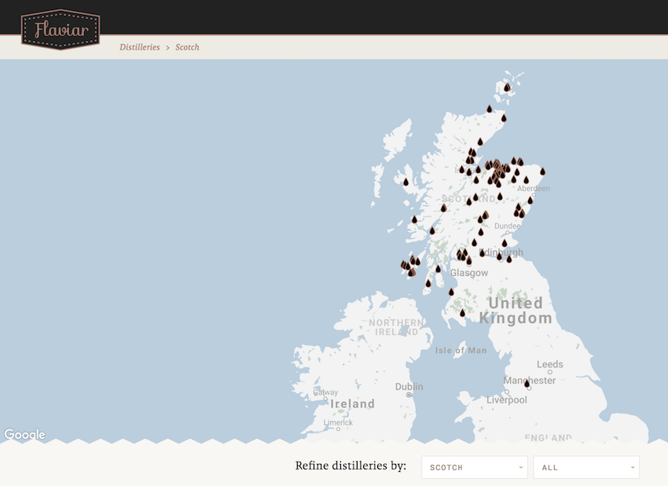

Scotch whisky enthusiasts that are hoping to see many of Scotland's finest distilleries firsthand should understand some of the intracacies of tour planning. Generall, there are two types of tours: distillery tours and tasting tours.
Distillery tours take people through the process of the distillery, and is generally more educational for those interested in how whisky is made. Distillery tours typically last about an hour and feature a brief tasting during or at the end of the tour.
Tasting tours, on the other hand, are more focused on the different products produced by the distillery and last 2-3 hours. Tasting tours are generally more geared towards experienced whisky drinkers that care more on trying the variety of whiskies offered by the distillery, and generally do not focus on the distillation process at all.
Most Scotch distilleries have set times and days in which they offer tours to the public, which vary based on the time of year. Peak season (April through September) will likely have more tour times, whereas off season (October through March) tours are either less frequent or unavailable (depending on the distillery). The Scotch Whisky Association provides a helpful guide to each of the major distillery tours including available season, dates and times, and cost. Websites like Flaviar also provide interactive maps to help plan distillery tours in advance.
In all instances of booking Scotch whisky tours, people should always have a disgnated driver to transport between distilleries. For larger groups, going through a bulk distillery tour service like Scottish Routes offers more structure and hassle-free transportation. On the other hand, some people may aim for using public transportation or backpacking to various distilleries, which is an experience on its own but limits the amount of distilleries to visit in a given amount of time.